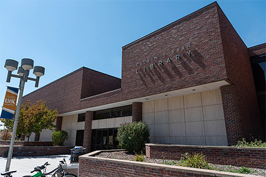
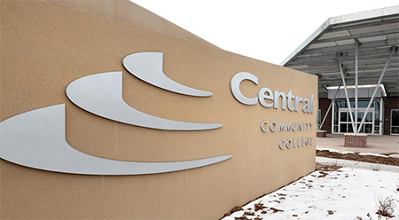
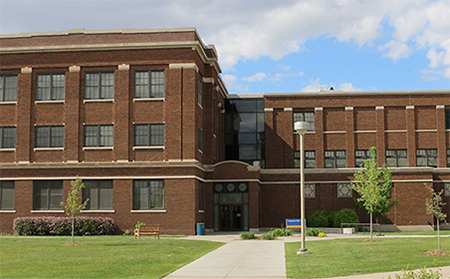

Experience
 I am currently the Library Services Platform (LSP) administrator at the University of Nebraska—Kearney (UNK) library. This I run the database and systems which are the library’s back end. The LSP provides the online catalog, as well as the ability to do things like checking items in and out. It also delivers access to electronic journals, eBooks, and similar resources. During my three years in this position, our library has migrated from one LSP to another. This has put me front and center for one of the most significant transitions a library can make. At the same time, we have merged into a consortium with the libraries on the university’s other campuses. This has significantly deepened my ability to work collaboratively. It has also given me the opportunity to take a leadership role in one of the project working groups, and as a liaison for our campus library. I hope to continue developing and growing in this position over the coming years.
Grand Island, NE
 My previous position—my first time working in a library—was a loosely defined “technical” position at Central Community College. I administered the backend systems for all three of the college’s campus libraries. Being in a very small library, I also served most traditional library functions (circulation, reference, cataloging, etc.). This was a good introduction to librarianship broadly, and also to the specifics of library systems administration. Thanks to the technical skill I brought to the job, I was able to implement numerous improvements to the workflow. I systematized the process of patron notification, and brought it completely online. I also automated patron account creation, which is an ongoing challenge for academic libraries. This position also gave me a thorough introduction to the process of extracting data from library systems.
 Prior to my transition to library work, I worked in technology support here at UNK. This job entailed both end-user support and maintenance of technology in classrooms, labs, etc. The College of Natural & Social Sciences was the largest division on campus, including faculty and equipment in four buildings and thirteen departments. I administered virtually all the hardware and software in the college. One of my most significant accomplishments in this position was systematizing the process of deploying and redeploying computers. In an organization this large, equipment turnover is a constant challenge. Through the procedures I developed, this was accomplished much more efficiently and reliably.